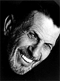

Photo by Lillian Wilson
Leonard Nimoy
Leonard Nimoy was born in Boston, MA, on March 26, 1931. He performed on stage, from the age of eight through his teens, in various amateur productions. In 1949 he set out for Hollywood, where he took acting classes, lived in a rooming house, and worked odd jobs to support himself.
His film debut came in 1951, when he landed a small part in "Queen for a Day". The small roles that followed, in obscure films and serials were a valuable training ground. In 1952, he had his first film lead, in "Kid Monk Baroni". A two year stint in the Army followed. While serving in Atlanta, Georgia, Nimoy starred in and directed a highly acclaimed production of Tennessee Williams' "A Streetcar Named Desire". After his army service, Nimoy went back to work in feature films, television and theater.
During the late 5O's and early 60's, Nimoy appeared in all the well-known TV shows of the period including "Wagon Train", "Man from U.N.C.L.E.", "Rawhide," Perry Mason", and "Combat" just to name a few. There were also several appearances in feature films and theatrical productions.
It was Nimoy's success in the science fiction series "Star Trek" which gained him world wide recognition. First airing in 1966, Nimoy's character, Mr. Spock, would become an icon over the years as the popular television show branched off into syndication and later onto the big screen as a series of six feature films. Nimoy's portrayal of the Vulcan earned him three Emmy nominations.
Nimoy also became a successful movie director, responsible for "Star Trek III: The Search for Spock" and "Star Trek IV: The Voyage Home"; His additional contributions to Star Trek include story writing credits on "Star Trek IV" and "Star Trek VI", which he also Executive Produced.
His "Star Trek IV: The Voyage Home", which focused on the rescue of Humpback Whales, is the most successful of the "Star Trek" films to date. Gene Roddenberry, Star Trek's creator referred to Nimoy as "the conscience of Star Trek."
Additional directorial credits include "The Good Mother", starring Diane Keaton and Liam Neeson; the blockbuster hit "Three Men and a,Baby", starring Tom Selleck, Ted Danson, and Steve Guttenberg; "Funny About Love", with Gene Wilder, Christine Lahti and Mary Stuart Masterson; and "Holy Matrimony", starring Patricia Arquette and Joseph Gordon-Levitt. A recent publication listed three of Nimoy's films among the top box office successes of all time.
Nimoy has starred in numerous stage productions, including "Camelot", "The Man in the Glass Booth", "Twelfth Night", "Oliver", and a record-setting tour in "Fiddler on the Roof." With "Vincent", a one-man play which he also produced and directed, Nimoy toured 35 cities in the United States and eventually taped the play at the Guthrie Theater in Minneapolis, for broadcast on the A & E Network. The play was based on letters written by Vincent Van Gogh, which he sent to his brother Theo. Another hit was in the title role of "Sherlock Holmes" in the Royal Shakespeare Company's National Tour. On Broadway, Nimoy has starred in "Equus" and "Full Circle".
On television he spent two years on the "Mission: Impossible" series and appeared in a number of television movies, including "A Woman Called Golda", in which he co-starred opposite Ingrid Bergman and for which he received an Emmy nomination for Best Actor in a Dramatic Special.
In 1991, he was seen on TNT in "Never Forget", in which he portrayed a survivor who fought a. successful court battle against Holocaust deniers. The show, which he also co-produced with partner Robert Radnitz was nominated for a Cable ACE Award. He was recently seen starring in the "I Robot" episode of OUTER LIMITS, in which he was directed by his son Adam Nimoy. In addition to hosting the highly successful "In Search Of.. series, he has served as host/narrator of "Ancient Mysteries" on the A & E Network.
Nimoy has also written three volumes of poetry and recorded ten narrative albums. In 1975, Nimoy published an autobiography entitled "I Am Not Spock." After a twenty year gestation period he wrote the sequel, which he refers to as "coming to terms" with his alter ego. The sequel was appropriately entitled "I Am Spock" and was published by Hyperion. Nimoy's performance of the audio version was nominated for a Grammy Award.
Nimoy's black and white art photography is represented in several galleries nationwide. His most recent exhibit was at Louis Stem Fine Arts in Beverly Hills, California.
Most recently Nimoy together with fellow actor John de Lancie is partnered in a production company called Alien Voices. To date they have produced audio dramatizations of H.G. Wells' "The Time Machine," Jules Verne's "Journey to the Center of the Earth," Sir Arthur Conan Doyle's "The Lost World," H.G. Wells' "The Invisible Man," and "The First Men in the Moon" for distribution by Simon and Schuster Audio.
Their television production of "The First Men in the Moon" by H.G. Wells was a history-making event. An old style radio production broadcast live on the Sci-Fi Channel and simultaneously transmitted on the Internet. This was followed by "The Lost World" and "A Halloween Trilogy" consisting of three short stories, Rudyard Kipling's "Mark of the Beast", Oscar Wilde's "The Canterville Ghost", and "The Cask of Amontillado" by Edgar Allen Poe.
Click Profiles for biographies of other Alien Voices participants.